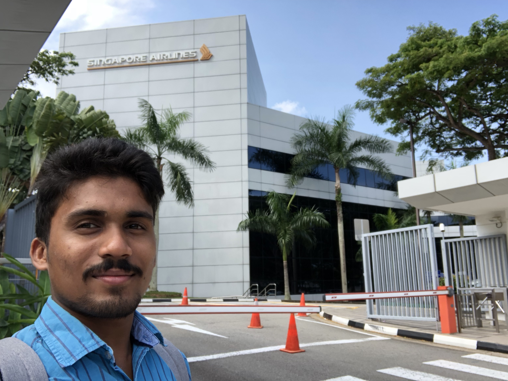

The summer of 2018 is memorable as I got accpeted into IDC for masters in Interaction design. As far as it felt happy,
I also had to take leave from TCS exactly when we completed our 2 week design thinking workshop with Singapore airlines.